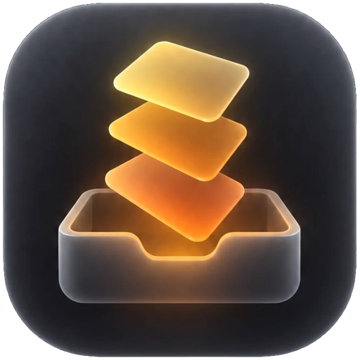

SafariChromeArcBraveEdge
It already knows what you're looking at
Press the shortcut on any tab and it's in the card — title, site, ready to save. Copied an image instead? That wins.

Stash is a tiny menu bar app for your references. It grabs the tab you're on — down to the second of the video — or the screenshot you just copied, and keeps it as plain Markdown on your Mac.
⌥⇧S to capture · ⌥⇧L to find
Sound on for the full effect.
Bookmarks you never open. Screenshots piling up on the desktop. Notes to yourself in a chat.
Stash replaces all of it with two keystrokes.
Every action has a key, and every key shows up when you need it.
Press the shortcut on any tab and it's in the card — title, site, ready to save. Copied an image instead? That wins.
Saving a YouTube video keeps the moment you were at. Open it later and it plays from 4:32.
Links, quotes, screenshots, ad creatives, PDFs. Paste or drop it; Stash works out what it is.
Add a note with inline tags. The ones you use most come up first; ⇥ completes.
⌘G turns your library into a grid for browsing when you need inspiration, not a search.
Keep the library in iCloud Drive, Dropbox or Syncthing. No Stash server involved.
Search titles, notes, tags, sites and the text inside saved PDFs — on every keystroke. Filter with #tag and type:image.
--- id: 01JA8K3Q7Z2M4X5C6V7B8N9P0Q type: link url: https://www.youtube.com/watch?v=dQw4w9WgXcQ&t=272s title: How I Write Hooks That Stop the Scroll site: youtube.com timestamp: 272 tags: [hooks, thumbnails] thumbnail: assets/01JA8K3Q7Z2M4X5C6V7B8N9P0Q.jpg created: 2026-10-14T10:20:00-03:00 --- great hook in the first 3s
Your references never leave your computer. No analytics, no telemetry, no crash reporting — ever.
The only network use: the title, thumbnail and icon of a link you save, from that site. One toggle turns it off.
The clipboard is read only when you capture, and anything your password manager marks private is skipped.
This website doesn't track you either. No cookies, no analytics.
MIT licensed, built with Swift, SwiftUI and AppKit. Read the code, open an issue, or build it yourself.
$ git clone https://github.com/S4MU3LDemolidor/stash.git $ cd stash $ scripts/run.sh
Free and open source, for everyone.